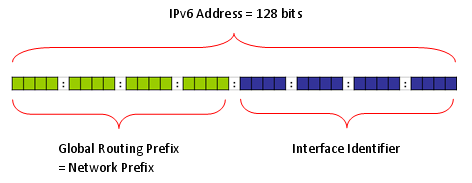

IPv6 is not a small topics at all and I am not the expert on this area to explain all the details of it. But I would like to share a couple of basic things on IPv6 which I think is important in mobile phone testing.
- Addressing Scheme
- Assigning PDN IE
- IPv6 Header and ICMP
- Initial Transaction for IPv6 Connectivity
- Router Discovery
- Neighbour Discovery
- Multicast Listener Discovery
- PC to PC Connection Test
- Following the Data Path
- Testing with Network Simulator
- IPv6 Testing with Network Simulator and Router
- Configuring Windows XP to simulate IPv6 Router
- Configuring Windows 7 to simulate IPv6 Router
- netsh
- Assigning a new IP address
- Removing the existing IPv6 address
- Reseting TCP/IP Config
- Getting IP Address from DHCP server
- Getting DNS from DHCP Server
- Setting DNS Server Manually
- Setting the Default Gateway Address
- Setting the Subnet Mask
- Network Basic
Anybody who is interested in IPv6 and read any IPv6 material would know IPv6 has 128 bits address space whereas IPv4 has 32 bit address space.
There is one more thing you have to keep in mind expecially in relation to LTE. It is the fact that the IPv6 address is made up of two big chunks as follows. One of the chunk (the first 64 bits of address space) is called Site Local or Global address depending on the situation. The second chunk(the second 64 bits of the address space) is called 'Link Local" address. (Regarding the meaning of Site Local and Link Local adress, refer to the first two link at the end of this section. At least to me, they are the ones which explains the IPv6 address scheme in the easiest and the most intuitive manner).

Following shows the most frequently used Prefix.
|
Prefix Description |
Prefix |
Bit Fields |
Functions |
|
Link Local address (Private) |
FE80::/10 (FE8:: through FEB::) |
1111 1110 10 |
i) Mandatory address for communication between two IPv6 device ii) Automatically assigned when IPv6 is enabled iii) Used for next hop calculation in routing protocol iv) Only link specific scope v) Remaining 54 bits can be 0 or any manualy configured value |
|
Site Local address |
FEC:: through FFF:: |
||
|
Unique Local Unicast |
FC00::/7 |
1111 1100 |
i) Local Communication ii) Inter-site VPN iii) Not routable on the internet |
|
FC00::/8 (Registry) |
1111 1100 |
||
|
FD00::/8 (No Registry) |
1111 1101 |
||
|
Global Unicast |
2000::/3 |
||
|
Loopback |
::1 |
||
| Unspecified | :: | ||
| Multicast | FF:: |
1111 1111 |
If you capture the wireshark log during the test, you will see many different types of multicast address and this table would help you understand the meaning of those addresses.
| IPv6 multicast address | Description |
|---|---|
| FF02::1 | The all-nodes address used to reach all nodes on the same link. |
| FF02::2 | The all-routers address used to reach all routers on the same link. |
| FF02::4 | The all-Distance Vector Multicast Routing Protocol (DVMRP) routers address used to reach all DVMRP multicast routers on the same link. |
| FF02::5 | The all-Open Shortest Path First (OSPF) routers address used to reach all OSPF routers on the same link. |
| FF02::6 | The all-OSPF designated routers address used to reach all OSPF designated routers on the same link. |
| FF02::1:FFXX:XXXX | The solicited-node address used in the address resolution process to resolve the IPv6 address of a link-local node to its link-layer address. The last 24 bits (XX:XXXX) of the solicited-node address are the last 24 bits of an IPv6 unicast address. |
Note : More details on Multicase prefix (Following description is quoted from http://computernetworkingnotes.com/ccna_certifications/ipv6_address_types_and_formats.htm)
- The first 8 bits are set to FF.
- The next 4 bits are the lifetime of the address: 0 is permanent and 1 is temporary.
- The next 4 bits indicate the scope of the multicast address (how far the packet can travel):
- 1 is for a node, 2 is for a link, 5 is for the site, 8 is for the organization, and E is global (the Internet).
For example, a multicast address that begins with FF02::/16 is a permanent link address, whereas an address of FF15::/16 is a temporary address for a site.
Getting into LTE. You would know that Network allocate a UE IP in the PDN address IE of Activate Default EPS Bearer Request or Activate Dedicated EPS Bearer Request. Then the question would be "how do I specify IPv6 or IPv4v6 in this information element". Do I have to put in the whole 128 bits ? or only part of 128 bits ? If I am supposed to put in only parts of the address, which part do I have to specify ?
The answer is "specify Interface Identifier" in PDN information element. (Refer to 3GPP 24.301 section 9.9.4.9 PDN address)
For example, if the interface indentifier that you want to allocate the UE is 0000:0000:0102:0002, the PDN value would be as follows.
+-PDN address ::= LV
| +-Octet1 ::= DIVISION
| | +-Length of PDN address contents ::= LEN (0..255) [9]
| +-Octet2 ::= DIVISION
| | +-spare ::= FIX [0]
| | +-PDN type value ::= CHOICE [IPv6]
| +-Octet3-14 ::= DIVISION
| +-PDN address information ::= OCTETARRAY SIZE(0..12) [0000000001010002]
What if the IP type is IPv4v6 dual stack ? The answer is "you have to concatenate IPv6 and IPv4 in such a manner that IPv6 comes first and IPv4 comes after". If the interface identifier of UE is 0000:0000:0102:0002 and IPv4 address is 10.10.10.10, the address you have to specify in PDN is as follows.
+-PDN address ::= LV
| +-Octet1 ::= DIVISION
| | +-Length of PDN address contents ::= LEN (0..255) [13]
| +-Octet2 ::= DIVISION
| | +-spare ::= FIX [0]
| | +-PDN type value ::= CHOICE [IPv4v6]
| +-Octet3-14 ::= DIVISION
| +-PDN address information ::= OCTETARRAY SIZE(0..12) [00000000010100020A0A0A0A]
Regardless of whether it is IPv6 or IPv4v6, once UE received Activate Default/Dedicated Bearer Request and respond it with Activate Default/Dedicated Bearer Accept message, UE initiate the IPv6 auto configuration process which is known as "Router Solicitation"/"Router Advertisement" process. UE send "Router Solicitation" to the router and router should reply with "Router Advertisement". One example process that I captured using Wireshark is as follows.
Now the question is "What would happen if UE failed to get the reply (Router Advertisement) from the router ?". To be honest, I haven't confirmed on this behavior from any specification, but as far as I experienced with sever devices that I have tried, UE retries two or three times and send "EMM Detach Request" if it still fail to get Router Advertisement.
This is a generic description of IPv6 with the focus on the application to LTE. If everything goes well with this, just understanding overall procedure would be enough. But if you are in a position to do some troubleshooting or want to dig into the packet structure of IPv6, following illustration would be helpful. This is an example of IPv6 packet showing Ipv6 header and ICMPv6.
Whenever you want to understand any form of packet structure, you would never understand it clearly unless you try to decode those packets by hand.Try decode the following examples of IPv6 packets according to the stucture as illustrated above.
Note : "Type" field in the structure shown above is showing "134" which means that this is for Router Advertisement. You will have different values in this field depending on the types of ICMP messages.
Example : Router Solicitation (the HEX 85, Dec 134 at the array index 40 indicates it is Router Solicitation)
60 00 00 00 00 08 3A FF FE 80 00 00 00 00 00 00 00 00 00 00 01 01 00 02 FF 02 00 00 00 00 00 00 00 00 00 00 00 00 00 02 85 00 7C 34 00 00 00 00
Example : Router Advertisement(the HEX 86, Dec 135 at the array index 40 indicates it is Router Solicitation)
60 00 00 00 00 40 3A FF FE 80 00 00 00 00 00 00 02 1C 58 FF FE 7E 16 C9 FF 02 00 00 00 00 00 00 00 00 00 00 00 00 00 01 86 00 68 08 40 00 00 C8 00 00 00 00 00 00 00 00 01 01 00 1C 58 7E 16 C9 05 01 00 00 00 00 05 DC 03 04 40 C0 00 00 70 80 00 00 62 70 00 00 00 00 FD D3 C0 61 8C D7 85 C8 00 00 00 00 00 00 00 00
In most cases especially when there is no problem, you can do most of IP layer traffic analysis with Wireshark. But there are some cases where you cannot use Wireshark. On server side, there would be no problem to use Wireshark and capture all the packet. But on UE side, Wireshark would be able to capture any Packet unless UE completes the IP setup and in many case UE does not exposure it's interface unless it completes some specified procedure (like Router Solicitation / Router Advertisement). So if something happens in such early stages of IP transaction on UE side, you would not be able to analyze those IP packet with Wireshark on UE PC. In this case, you may have to turn to Network (Network Simulator) log or UE log and analyze the raw data of the IP packets manually. In this case, following table will help you a lot to identify what kind of packet it is. This is the table showing the meaning of the value in "Type" field of the IP packet structure shown above.
For more details, please refer to http://en.wikipedia.org/wiki/ICMPv6
|
Value in Type field |
Meaning |
|
1 (HEX : 01) |
Destination Unreachable |
|
2 (HEX : 02) |
Packet Too Big |
|
3 (HEX : 03) |
Time Exceeded |
|
4 (HEX : 04) |
Parameter Problem |
|
100 (HEX : 64) |
Private experimentation |
|
101 (HEX : 65) |
Private experimentation |
|
127 (HEX : 7F) |
Reserved for expansion of ICMPv6 error messages |
|
128 (HEX : 80) |
Echo Request |
|
129 (HEX : 81) |
Echo Reply |
|
133 (HEX : 85) |
Router Solicitation (NDP) |
|
134 (HEX : 86) |
Router Advertisement (NDP) |
|
135 (HEX : 87) |
Neighbor Solicitation (NDP) |
|
136 (HEX : 88) |
Neighbor Advertisement (NDP) |
|
138 (HEX : 8A) |
Redirect Message (NDP) |
|
139 (HEX : 8B) |
ICMP Node Information Query |
|
140 (HEX : 8C) |
ICMP Node Information Response |
|
141 (HEX : 8D) |
Inverse Neighbor Discovery Solicitation Message |
|
142 (HEX : 8E) |
Inverse Neighbor Discovery Advertisement Message |
|
144 (HEX : 8F) |
Home Agent Address Discovery Request Message |
|
145 (HEX : 90) |
Home Agent Address Discovery Reply Message |
|
146 (HEX : 91) |
Mobile Prefix Solicitation |
|
147 (HEX : 92) |
Mobile Prefix Advertisement |
|
148 (HEX : 93) |
Certification Path Solicitation (SEND) |
|
149 (HEX : 94) |
Certification Path Advertisement (SEND) |
|
151 (HEX : 97) |
Multicast Router Advertisement (MRD) |
|
152 (HEX : 98) |
Multicast Router Solicitation (MRD) |
|
153 (HEX : 99) |
Multicast Router Termination (MRD) |
|
200 (HEX : C8) |
Private experimentation |
|
201 (HEX : C9) |
Private experimentation |
|
255 (HEX : FF) |
Reserved for expansion of ICMPv6 informational messages |
Followings are the link where you can get some basic understaqnding of IPv6.
- http://blogs.cisco.com/security/ipv6-addressing/
- http://www.cisco.com/web/about/ac123/ac147/archived_issues/ipj_7-2/ipv6_autoconfig.html
- http://www.cisco.com/web/solutions/netsys/ipv6/vds_transit_pt01.html
- http://www.cisco.com/web/solutions/netsys/ipv6/vds_transit_pt02.html
- http://www.cisco.com/web/solutions/netsys/ipv6/vds_transit_pt03.html
- http://www.cisco.com/web/solutions/netsys/ipv6/vds_transit_pt04.html
- http://www.slideshare.net/feb_989/cisco-i-pv6-laband-techtorial-workshop-v0
Initial Transactions for IPv6 Connectivity
Following is the most common initial transactions for IPv6 connectivity. Router Discovery is performed whenever your IPv6 interface card boots up (refere to next section for details) and Neibour discovery would happen when you start the first data traffic (e.g, ping or UDP/TCP).

When you test your device with network simulator and a server PC directly connected to the network simulator, you may not have to care about this IPv6 process. But in some UE (in most of Verizon UEs as far as I experienced), UE would automatically send 'EMM : Detatch' request if it does not recieve any Router Advertisement within a certain time frame.
So it would be good to understanding the basics of this Router Discovery process.
In IPv6, the user device (network interface card) automatically finds the router it is connected by using a special process called 'Router Discovery' process. You may think this is pretty similar to DHCP in IPv4.
The basic idea of the process is simple.
i) a Network device (user device) sends "Router Solicitation" packet to every body saying "I am a network interface device, please identify yourself if there is any router who is listening to me".
ii) Router sends "Router Advertisement" packet saying "I am the router you are connected to and use this 'prefix' for any packets which should be delivered to outside networks".
Actually you can configure your router to send 'Router Advertisement' with a certain periodicity. But this periodicity (normally 10 seconds) can be too long in some case, in this case the host device (user device) can explicitely send 'Router Solicitation' and Router send 'Router Advertisement' .
When you test your device with network simulator and a server PC directly connected to the network simulator, you may not have to care about this IPv6 process. As far as I experienced, there has been no problem even if I do nothing about this. But you will keep seeing those packets realted to this process (Neighbor solicitation, Neighbor Advertisement) from the wireshark log. Due to the intrinsic curiosity of an engineer, I decided to figure out the rough picture of this process at least.
Neighbor Discovery process has several different usages and depending on who (Router? or Host PC?) initiate the process, the purpose of the process can be different.
I found a good description of the purpose of ND(Neighbor Discovery) from msdn (http://msdn.microsoft.com/en-us/library/ms883129.aspx) as follows.
- Hosts use ND to discover neighboring routers, addresses, address prefixes, and other parameters.
- Routers use ND to advertise their presence, host parameters, and on-link prefixes. Routers also use ND to inform hosts of a better next-hop address to forward packets for a specific destination.
- Nodes use ND to resolve the link-layer address of a neighboring node to which an IPv6 packet is being forwarded. Nodes also use ND to determine when the link-layer address of a neighboring node has changed, and whether IPv6 packets can be sent to and received from a neighbor.
As you noticed, Neighbor Solicitation and Neighbor Adverdisement is used in several different situation and analyzing the packet log can be a little tricky. Making the practice of analyzing the various packet log (Wireshark log) would be a good way to understand this in detail.
< Neighbor Solicitation >
These messages have 3 main purposes.
i) The first is to discover the link layer address of a neighbour as part of the address resolution process. This process replaces the use of ARP requests and replies in IPv4.
ii) The second purpose is to determine the reachability of a neighbour.
iii) The last is to detect the presence of duplicate IPv6 addresses during the address autoconfiguration process which is detailed later in this report.
< Neighbour Advertisement >
These messages are either in response to Neighbour Solicitations, or sent by a neighbour to announce a change in its link layer address. Upon receipt of a Neighbour Advertisement, a node will update its neighbour cache which contains mappings between IPv6 and link layer addresses of neighbours.
Multicast is "to send a packet from a single source to multiple destination simultaneosuly". For this, the group of the multiple destination which will receive the packet should be defined. Multicast Listener Discovery (MLD) is a specific IPv6 procedure to find and define the destination group that will receive the multicast packet.

As in IPv4 test, the easiest way to learn and the best way for troubleshooting for IPv6 is to connect two PCs directly and try basic things.
Disclaimer : This tutorial may not work with your PC depending on the configuration and operating system that you are using. (For example, in Windows7 it seems that ping6 command is not supported and you have to use "ping -6". there may be some other differences that I haven't noticed).
I used the two PCs as follows and connect them directly each other using a Cat 6 ethernet cable.
PC A : Windows XP Professional Service Pack 3
PC B : Windows XP Professional Service Pack 2
Following is the ipconfig result of my PC A. I have multile Ethernet cards in PC A and I will use the card labeled "Local Area Connection 3". I haven't specified any IPv4 address for this interface, but IPv4 address was automatically generated by IPv6 address allocation mechanism. (You may have 0.0.0.0 for Autoconfiguration IP Address and Subnet mask when you first connected the two PCs if you haven't specified it manually. But this IP would be configured automatically once you ping to other PC with IPv6. If you haven't set these IPv4 manually, the IP is set automatically to belong to the same subnet as the other PC).
In IPv6 case, Inferface ID (Interface Index) of each ethernet card is important. You can figure out the interface ID for each network card using the command "netsh int ipv6 show int"
Following is the ipconfig result for PC B. I will use the ethernet card named MD8480C. I haven't specified any IPv4 address for this interface, but IPv4 address was automatically generated by IPv6 address allocation mechanism.
Now you have all the information ready for basic connection test, ping. Notice that I used the command "ping6" and specify the source address as well. The most difficult part of IPv6 ping test would be memorize and type the IP address -:)
Note : It is important to append interface ID to the source address especially when you have multiple ethernet inferface on the source PC. If you don't specify the interface ID, you may get the following errors.
Pinging fe80::baac:6fff:fe1c:9e60
from fe80::250:b6ff:fe05:f719 with 32 bytes of data:
Invalid source route specified.
Problem with source address or scope-id.
Invalid source route specified.
Problem with source address or scope-id.
Invalid source route specified.
Problem with source address or scope-id.
Invalid source route specified.
Problem with source address or scope-id.
Ping statistics for fe80::baac:6fff:fe1c:9e60:
Packets: Sent = 4, Received = 0, Lost = 4 (100% loss),
If you don't have any error and capture Wireshark log, you will see a transaction as follows.
For the complete connection test, I always recommend you to try the other direction as well (ping from PC B to PC A), but I will not explain about it since the procedure is exactly same as above.
NOTE : If ping request (Echo Request) goes out from the source PC (verify with Wireshark on source PC) and comes into the target PC(verify with Wireshark on target PC), but Echo Reply (ping reply) does not issued by the target PC. A high possibility would be that target PC firewall is not allowing ICMP reply. I saw a lot of PCs configured this way.
Before we get into the test procedure using a Network Simulator (UE tester), let's briefly look into the data path from the source to the destination. If you are in a position to test or troubleshoot IP related test, you'd better have logging tools to check the data flow of all these nodes. (High qualaty UE protocol log, Wireshark, High Quality Network Simulator logging tool would be a minimum requirement. Otherwise, you have to leave all those troubleshooting as a matter of luck).
i) IP Client (e.g, ICMP-Ping) on UE PC
ii) UE Packet Driver
iii) UE LTE Protocol Stack
iv) RF Channel
v) LTE Network Simulator Radio Protocol Stack
vi) TE port of Network Simulator
vii) LAN Cable
viii) LAN Card (NIC) on Server PC
ix) IP Server(e.g, ICMP-Ping) on Server PC
If you do ping from UE PC to Server PC, the data path would be
i) --> ii) --> iii) --> iv) --> v) --> vi) --> vii) --> viii) --> ix) : Echo Request
ix) --> viii) --> vii) --> vi) --> v) --> iv) --> iii) --> ii) --> i) : Echo Reply
We do ping (ping6) using the UE's IPv6 allocated by PC operating system (The one you get from 'ipconfig'). The ICMP client create a Echo Request ICMP packet with this IPv6 address.
(I am not sure about this, but this is my observation) UE Packet Driver changes the source IP address that ICMP client assigned into the one the UE got from the NAS message (PDN Information).
The remaining path is as you already know.
If you see the Wireshark log on Server PC, you will see the IP address specified in the NAS message on Wireshark log. (This is different from what you typed in for ping6 command).
IPv6 Testing with Network Simulator
The configuration that I have used for this tutorial is as follows. Note that a server PC is directly connected to the equipment without using any router in the middle. So if a UE mandate to have Routing Advertisement as soon as it establishes EPS bearer, this test would not work. UE would disconnect EPS just a couple of seconds after it establishes EPS bearer in that case. But there would be such a UE which would not disconnect EPS even though it does not get Router Advertisement because there is possibility for direct/local connection.
For this tutorial, I used IPv4v6 dual stack. In this case, UE tend to remain connected even though it would not get Router Advertisement after EPS bearer setup. (But this also depends on UE implmentation).
In this test configuration, there are many different IP addresses you have to take into account. This is one of the biggest difficulties of IPv6 test. Followings are the list of IPv6 address involved in this setup.
i) Link Local address assigned by UE PC to the UE (You can get this from Ipconfig)
ii) Link Local address created based on interface id in PDN address info
iii) Destination IP address that the server PC is using when it reply to the packet from UE.
iv) IP address to configure the TFT (Traffic Flow Template) of the TE port. (This would be the most tricky part).
You have to consider all of these IP addresses and have clear idea on how/when to use each of these IP addresses.
Let's try an example to show the complete process of this test.
< IP Config for UE PC >
This is the ipconfig result for UE PC and "Ethernet Local Area Connection 17" is for the LTE UE when it is in Default EPS Bearer Connection with my LTE Network Simulator.
< IP Config for Server PC >
This is the ipconfig result for Server PC and "Ethernet adapter MD8480C" is the one that I will use. For now, disregard all IPv4 address and IPv6 address starting with 200. I will use the IP starting with fe80:: in this section.
< Interface ID on PDN - Activate Default EPS Bearer Context Request >
Following is the PDN address information that I set in Activate Default EPS Bearer Context Request. 0000000000000001 is the interface id for IPv6 and C0A891E7 is for IPv4.
+-PDN address ::= LV
| +-Octet1 ::= DIVISION
| | +-Length of PDN address contents ::= LEN (0..255) [13]
| +-Octet2 ::= DIVISION
| | +-spare ::= FIX [0]
| | +-PDN type value ::= CHOICE [IPv4v6]
| +-Octet3-14 ::= DIVISION
| +-PDN address information ::= OCTETARRAY SIZE(0..12) [0000000000000001C0A891E7]
< TE Port filter Setting >
I configure the TFT (Traffic Flow Template) of the TE port of my BTS Emulator in such a way to allow the all incoming IP packet which has the destination address to be FE80::1 (FE80:0000:0000:0000:0000:0000:0000:0001). Exact way on how to configure this would vary with the equipment (BTS simulator).
You may need to go through some troubleshooting process to figure out which IP address you have to set for this TFT. Since this address may be different depending on the operating system and any IPv6 tools running the PC etc.
The way that I figure out this address is to capture Wireshark Log between the equipment TE port and Server PC and check the IP address for echo reply from the server. (If this TFT filter setting is wrong, the packet would not get into the equipment and reach the UE, but you can still get the packet from Wireshark running on the server PC). For example, following is the wireshark log captured on the server PC when I ping from UE PC to Server PC. The "echo reply" may not reach the UE depending on TFT settings, but you would get the destination address from this log. Configure your TFT filter so that I can allow the packets headed for the destination address.
< Ping from UE to Server PC >
Now we are ready for the ping. I did the ping from UE to Server PC as follows. Note that I used the UE's link local address that I got from ipconfig as a source address, not the address that I set in PDN address information.
Now let's look into Wireshark log for this transaction. There is no problem with Echo Request and Echo Reply. But don't you find any strage thing here ? If you see the source address of 'Echo request', it is different from the address that you specified in your ping command. It is the 'fe80:0000:0000:0000' (Network prefix for Link Local) + '0000:0000:0000:0001' (the interface ID you specified in PDN address info)'. It seems that the UE network driver translate the IP address you specified from ping command to this address. It imply that you would have different result for this depending on UE implementation.
< Ping from Server PC to UE >
Now let's ping from Server PC to UE to make it sure it works for both direction.
Following is the Wireshark log for this ping transaction. If you see 'Echo Request', Server PC does not do any IP translation for UE, but you would see UE is translating the IP in 'Echo Reply' to the one specified by PDN address information.
IPv6 Testing with Network Simulator and Router
There are some cases where UE must recieve Router Advertisement, otherwise it send EMM detach within a couple of seconds. In this case, you need to add proper tools to send the Router advertisement in response to the Router Solicitation from UE.
There are two ways to do this, one is to use a real IPv6 router and the other way is to use a special software which can send Router Advertisement.
As the first method, you can add an IPv6 router to the test equipment and connect the server PC to the router as follows. If you connect the test equipment to your company network. The configuration will be the most likely as follows. In this case, you have to know the details of Router configuration or have one of your IT people as a close friend -:)
Another way to do this is to use special software (program) simulating the IPv6 router and send 'Router Advertisement'. You can download such a software at http://sourceforge.net/projects/wradvs/ for windows XP and at http://www.litech.org/radvd/ for linux.
Overall test flow is similar to the case of direct connection, but there will some additional details you have to consider router setup/router software setup.
One of the biggest problem is to configure TFT filter on network (network emulator) side. Usually the network emulator would get through any packet from UE to out of the equipment, but they tend to apply very strict rule to incoming packets (Packets coming into the equipment). In case of Router Solicitation and Router Advertisement process, usually Router Solicitation would go through freely, but Router Advertisement would not get into the box unless you configure the IP filters at TE port.
Then why don't we simply set the IP filter for it ? Unfortunately the answer is not easy mainly because there can be so many different combination of IP address for a same network interface.
Following is a Wireshark capture of IP packing captured at the TE port of an equipment.
Let's assume that we want to confiture the TE port (TFT filter) so that it allow Router Advertisement packet destined to the UE IP. What we have to do is simple and clear. Just to specify the proper UE IP address to TFT filter. But "How" part of this step is not so easy because there are too many different way of defining the UE IP address in this case.
- i) The IP address that UE used for Router Solicitation as source address. In this example, it is fe80:0000:0000:0000:0000:0000:0101:0002.
- ii) The IP address that Router use as the destination address in Router Advertisement. In this example, it is ff02:0000:0000:0000:0000:0000:0000:0001
- iii) "Network prefix" value informed by "Router Advertisement" + UE interface Identifier in PDN Address Information : In this example, it is fde0:0000:0000:0001:0000:000:0101:0002
- iv) The UE IP address that I get from UE PC by using ipconfig : it is not shown in wireshark, but let's assume that it is fe80:0000:0000:0000:0280:98ff:fe40:a9fb
- v) "Network prefix" value informed by "Router Advertisement" + UE interface Identifier from IP config on UE PC : In this example, it is fde0:0000:0000:0001:0280:98ff:fe40:a9fb
What should be the one I have to use ? It is totally upto the network (network simulator) TE port implementation. so there would be no clear answer for it. (In case of the network simulator that I am using, I am supposed to use the type iii), but the answer would be different for your equipment).
There is even trickier case. In some equipment, the TFT filer works differently depending on whether the incomming packet is for Router Advertisement or it is for other generic packets (e.g, ping or ftp/udp etc). If the equipment support multiple TFT filter criteria you can simply set those multiple criteria, but if it is not the case you have to change TFT filter configuration after you complete Router Solicitation / Router Advertisement.
Configuring Windows XP to simulate IPv6 Router
As I mentioned above, you can make WindowsXP to work as IPv6 router. By doing this, you can do the basic IPv6 testing without using any hardware IPv6 router.
The way to do this is to use special software (program) simulating the IPv6 router and send 'Router Advertisement'. You can download such a software at http://sourceforge.net/projects/wradvs/ for windows XP and at http://www.litech.org/radvd/ for linux.
Configuring Windows 7 to simulate IPv6 Router
In Windows 7, you can make the operating system to act as IPv6 router without installing any additional software. You only have to execute the following three netsh command.
i) netsh interface ipv6 set interface [Interface ID] advertise=enabled
Ex> netsh interface ipv6 set interface 11 advertise=enabled
ii) netsh interface ipv6 add route [Prefix/64] [Interface ID] publish=yes
Ex> netsh interface ipv6 add route 2001:0:0:2::/64 11 publish=yes
iii) netsh interface ipv6 set interface [Interface ID] currenthoplimit=64
Ex> netsh interface ipv6 set interface 11 currenthoplimit=64
This is just an appedix of this section. You already noticed that I often used special command 'netsh'. This is a command supported by Windows by defaul and following is the dump of help for this command. This would give you overall capability of this command but you would never get the real meaning unless you try yourself.
C:\>netsh -?
Usage: netsh [-a AliasFile] [-c Context] [-r RemoteMachine] [Command | -f ScriptFile]
The following commands are available:
Commands in this context:
? - Displays a list of commands.
add - Adds a configuration entry to a list of entries.
bridge - Changes to the `netsh bridge' context.
delete - Deletes a configuration entry from a list of entries.
diag - Changes to the `netsh diag' context.
dump - Displays a configuration script.
exec - Runs a script file.
firewall - Changes to the `netsh firewall' context.
help - Displays a list of commands.
interface - Changes to the `netsh interface' context.
lan - Changes to the `netsh lan' context.
ras - Changes to the `netsh ras' context.
routing - Changes to the `netsh routing' context.
set - Updates configuration settings.
show - Displays information.
winsock - Changes to the `netsh winsock' context.
C:\>netsh
netsh>help
The following commands are available:
Commands in this context:
.. - Goes up one context level.
? - Displays a list of commands.
abort - Discards changes made while in offline mode.
add - Adds a configuration entry to a list of entries.
alias - Adds an alias.
bridge - Changes to the `netsh bridge' context.
bye - Exits the program.
commit - Commits changes made while in offline mode.
delete - Deletes a configuration entry from a list of entries.
diag - Changes to the `netsh diag' context.
dump - Displays a configuration script.
exec - Runs a script file.
exit - Exits the program.
firewall - Changes to the `netsh firewall' context.
help - Displays a list of commands.
interface - Changes to the `netsh interface' context.
lan - Changes to the `netsh lan' context.
nap - Changes to the `netsh nap' context.
offline - Sets the current mode to offline.
online - Sets the current mode to online.
popd - Pops a context from the stack.
pushd - Pushes current context on stack.
quit - Exits the program.
ras - Changes to the `netsh ras' context.
routing - Changes to the `netsh routing' context.
set - Updates configuration settings.
show - Displays information.
unalias - Deletes an alias.
winsock - Changes to the `netsh winsock' context.
The following sub-contexts are available:
bridge diag firewall interface lan nap ras routing winsock
To view help for a command, type the command, followed by a space, and then
type ?.
netsh>
There would be some cases you want to allocate an arbitrary IPv6 IP to your network interface (LAN card). You can change the existing IP address or you can add a new IP for the interface (one of important difference in IPv6 in comparison to IPv4 would be that you can allocate more than one IP to the single interface card).
Why you want to change the IP ? Why you want to add a new address ? The answer would vary. For me, I wanted to change it to a simple address since my brain is not good enough to memorize such a long random number-like digits -:). Of course, there will be more technical reasons for this which may different for everybody.
One example I will go through in this section is to change the IPv6 address to a specific address to the two PCs directly connected each other and try ping if the change works as expected.
In Windows system (Windows XP Professional in my case), a special command called 'netsh' is provided and you can configure almost every details of your interface using this command.
The command format to add a new IPv6 address is as follows :
netsh int ipv6 set address <interface Number> IPv6_address
Do you know how to get the inferface number for your network card ? If you don't remember, read PC to PC Connection Test part again.
One example of this command is as follows. If the command has no problem, it will return 'OK' when you press Enter as follows.
Confirm if the IP address is properly set to your network interface by using ipconfig.
Now add a new IP address to the other PC as well. In my example case, I set the IP address 2001::1 for the other PC.
And then try ping if it is working as expected.
Until you are very familiar with this kind of testing and have strong confidence about the operation, try always to confirm the result with Wireshark on both source and destination site. This is wireshark log captured on source PC.
Removing the existing IPv6 address
You can remove an existing IP if you want by using the following command.
netsh int ipv6 delete address <interface Number> IPv6_address
An example would be
netsh int ipv6 delete address 7 2001::2
Confirm the result with ipconfig.
Sometimes you may come across with the error message saying "A device attached to the system is not functioning.". In this case, you can reset the IP settings for the all network interface on your PC by the following command.
netsh int ip reset c:\resetlog.txt
And reboot the PC and then try check with IP config. (All the details which happened during the resetting process are stored in c:\resetlog.txt for your reference and for any possible recovery)
Getting IP Address from DHCP server
netsh interface ip set address "Local Area Connection" dhcp
netsh interface ip set dns "Local Area Connection" dhcp
netsh interface ipv6 add dnsserver "Interface Name" DNS_Server_address
Example : c:\> netsh interface ipv6 add dnsserver "Local Area Connection" 2001:db8:99:4acd::8
Setting the Default Gateway Address
netsh interface ipv6 add route ::/0 <Interface Number> <Default Gateway address >
Example : c:\> netsh int ipv6 add route ::/0 4 FE80::2
Note : Don't copy the number "4" from this example. Your <interface Number> may be different. So make it sure you specified the correct interface number.
Or you can use "Interface Name" in stead of < Interface Number > as follows.
netsh interface ipv6 add route "Interface Name" Default_GateWay_Address
Example : c:\> netsh interface ipv6 add route ::/0 "Local Area Connection" fe80::2aa:ff:fe9a:21b8
netsh int ipv6 add route <subnet mask> <interface number>
Example : c:\> netsh int ipv6 add route FD00:0:0:1::/64 4
Network Basics - Default Gateway
Default Gateway is a kind of Gateway you specify on your PC (or any host) by which any packet goes through to reach another PC (or another host) which is not in the same subnet as your PC.
Definition would sound simple, but it would be difficult to understand the concept without trying yourself or some simple examples.
Let's assume that we have very simple networks as illustrated below.
Case 1 >
PC (A) tries to send a packet to PC (C). The overall procedure for this traffic would be as follows.
i) The source (PC (A)) checks the destination IP (PC (C)) and find out that the destination IP belong to the same subnet. (It means it does not need to consult to 'Default Gateway' to reach the destination).
ii) The source checks its ARP table to figure out the MAC address of the destination.
a) If the destination IP and MAC address mapping is already stored in the ARP table, the source send the packet directly to the destination
b) If the destination IP and MAC address mapping is already not stored in the ARP table, the source performs ARP procedure and figure out the destination MAC address and then send the packet to the destination.
Case B >
PC (A) tries to send a packet to PC (E). The overall procedure for this traffic would be as follows.
i) The source (PC (A)) checks the destination IP (PC (E)) and find out that the destination IP does not belong to the same subnet. (It means it need the help of 'Default Gateway' to reach the destination).
ii) The source send the packet to the default Gateway (GW1 in this case) and the default Gateway handles all the remaining procedure to deliver the packet to the destination. (In terms of the default Gateway, it may have to go through several additional steps to deliver the data to the next node, but in terms of host. It is so simple as explained here. Just send the packet to Default Gateway).
Network Basics - ARP (Address Resolution Protocol)
Even though we specify the source and destination of a packet in the form of IP address, when the packets move along the physical infrastructure of a network, it just jumps from one node to another neghbouring node using link layer address (MAC address), not the IP address. So when a node (e.g, a PC) send a packet to another neighbouring, the source node has to figure out the MAC address (Link Layer address) of the neighbouring node. (Note : Neigbouring node means a node which belongs to the same subnet). ARP is a kind of protocol that enable a node (source node, e.g, a source PC) to find MAC address of another neiboursing node.
An example would give you more clear idea on how this works. Following is a wireshark log for an ARP request and ARP response.
Step 1 : The source Node (e.g, a PC which wants to send a packet) broadcast a 'ARP request' message as shown below. This example is saying "Hey.. Listen everybody, I want to talk to 192.168.0.1. If any of you has this IP address, let me know your the MAC address. My IP address is 192.168.0.13 and my MAC address is 68:5d:43:8b:f9:de"
Let's look into details of the message(ARP request packet).
(1)(a) : This field carries the MAC address of the source Node
(2)(e) : This field carries the destination address of the packet. In this case, the address is 'Broadcast' address, it means that all the nodes which recieves this frame has to decode it and check if it has to do any action for it or not.
(3) : This field carries the IP address of the source node.
(4): This field carries the IP address of the node which the source wants to deliver the packet to.
(5) : This field is for the MAC address of the destination node(192.168.0.13), but this is set to be all 0 because the MAC address is not known yet.
Step 2 : All the nodes (PCs, Routers etc) connected to the PC 192.168.0.13 decode the ARP Request frame and check if the packet is destined for it. If the packet is not for it, just discard the frame and do nothing and if the frame is for it (the reciever), it has to move to step 3.
Step 3 : Generate ARP reply frame(Packet) and send it back to the node (the PC which sent ARP Request). This ARP reply packet is saying "Hey.. I am the node (PC) you are looking for and here goes my MAC address".
The detailed contents of the message is as follows :
(5)(f)(8) : This field carries the MAC address of the node 192.168.0.1. This is exactly what the PC 192.168.0.13 wants to get through this ARP process.
(6)(h) : This field carries the MAC address of the reciever (the PC 192.168.0.13 in this example). Note that this is the unit cast address, not the broadcast address as in ARP request. This is because the MAC address of the reciever is already known from ARP request packet.
(7)(g) : This field carries the IP address of the sender.
(i) : This field carries the IP address of the reciever.